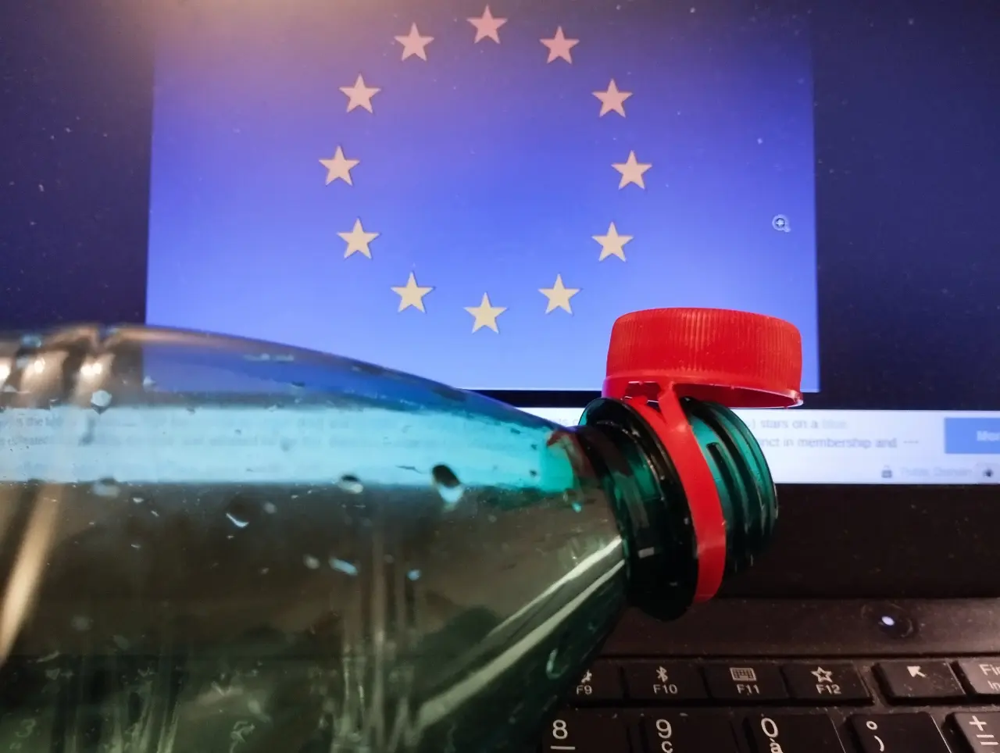

Vœux 2025 : Plus d'Europe, moins de bouchons en plastique

Blog, 09/01/2025, par Sven Franck (version anglaise ici, version allemande ici)
L'année est passée. 2024 a tiré sa révérence et nos regards anxieux se tournent vers les contours de 2025 qui se dessinent à travers du brouillard hivernal. Les miens sont fixées à la publication auto-satisfaite de l’UE sur l'harmonization de la prise USB-C, joyeux fêtes, et tandis que je tente maladroitement de retirer le bouchon en plastique de ma bouteille d’eau, je ne peux m’empêcher de me demander : pouvons-nous pas demander davantage à cette Europe que des bouchons en plastique ?
Aujourd’hui, l’Europe ressemble beaucoup à notre industrie automobile, qui innove autour des phares pendant que d’autres réinventent la mobilité. Les États-Unis, la Chine et la Russie sont ces « innovateurs », déterminés à démanteler la démocratie et, avec elle, l’Union européenne. Pourquoi l’acceptons-nous au lieu d’agir ? Même Angela Merkel, peu connue pour défendre le changement durant son mandat, nous rappelait que « nous devons constamment renouveler la politique de l’Europe pour l’adapter au courant du temps ». Ces « temps » frappent à la porte depuis longtemps, mais aucun de nos dirigeants politiques ne semble entendre le message. Ils ne font que semblant : alors que nous honorons la mémoire de Jacques Delors, l’un des présidents de la Commission ayant fait avancer le projet européen, ses prétendus héritiers spirituels se distinguent : Olaf Scholz, qui se désintéresse de l’Europe, Emmanuel Macron, qui n’a pas su transformer l’Europe en une version élargie de la France, et Ursula von der Leyen, présidente de la Commission, qui esquive son rôle en réduisant l’Europe à un Bauhaus bureaucratique tenu par des ficelles tirées à huis clos par les États membres.
L’Europe a désespérément besoin d’avancer. Mais nous restons immobiles, immobilisés, comme dans des autos-tamponneuses avec 27 conducteurs prêts à enclencher la marche arrière à tout moment. La carrosserie de l’Europe a déjà été malmenée – par les action de ses adversaires, mais aussi par l'inaction de nos dirigeants. Et tandis que nous arrachons probablement tous le bouchon en plastique de nos bouteilles pour tirer un trait sur l’année écoulée, je me demande : ne devrions-nous pas franchir la prochaine étape logique pour l’Europe ?
Can the real Europeans please stand up
Un autre des pères fondateurs de l’Europe montre la voie : Jean Monnet a dit : « Je ne suis pas optimiste, je suis déterminé. » Nous ferions bien d’être aussi déterminés. Nous jouons avec un jeu truqué, ayant Scholz, Macron, von der Leyen comme meilleures cartes, plus quelques Orbáns, Ficos et maintenant Kickls. On peut se débarrasser de certaines cartes, mais peu importe la couleur : si nous piochons dans le paquet existant, nous risquons de tomber sur des Merz, des Lindners, des Mélenchons et des Le Pen, et il ne faut pas être prophète pour savoir que nous ne sommes pas les meilleurs bluffeurs à l’échelle européenne.
Si l’Europe veut « innover », nous devons improviser : nouveaux jeux, nouvelles cartes, nouvelles règles. Qui joue ? Faites vos paris... et je vais jouer le prophète ici : si nous continuons à grignoter du popcorn pendant que le navire européen coule, il ne faudra pas se plaindre lorsque nos pieds et notre popcorn seront trempés. Rester au sec signifie se lever et voter pour des alternatives qui défendent un agenda européen. Et nous devons assumer nos responsabilités : une nouvelle année est aussi le moment de prendre des résolutions, comme arrêter de seulement critiquer la politique et s’engager – contribuer à élever la politique au niveau qualitatif dont nous avons tant besoin aujourd’hui. « The going got tough », l’Europe a besoin de vos renforts.
Un nouvel élan européen
Et bien que vous ne défiiez probablement pas directement Ursula von der Leyen pour la présidence de la Commission (en fait, pourquoi pas ...), nous devons être audacieux. Les extrémistes à travers l’Europe n’hésitent pas à afficher leurs ambitions de semer la division et de démanteler notre Union. « Divided, they fall » est la devise de nos adversaires ; alors, ceux qui sont convaincus que nous devons être unis pour relever nos défis communs ne doivent pas hésiter. L’Union européenne doit évoluer. Pas le sempiternel « Harder, Better, Faster, Stronger », mais un vrai passage à un niveau supérieur. Cette mise à jour ne viendra pas des partis politiques nationaux qui tirent les ficelles et agissent comme notre industrie automobile. Si nous voulons débloquer de nouvelles capacités européennes – comme faire de l’UE une voix politique pour ses citoyens, qui définit ce que nous, Européens, considérons comme essentiel, de la démocratie aux droits humains, et qui défend ces idées en Europe et au-delà –, nous devons innover.
Innover ne signifie pas se contenter de parler d’un changement des traités. Bien au contraire : si Donald Trump critiquait le Danemark pour ne pas défendre le Groenland, je parierais que les 27 gouvernements nationaux pourraient même s’accorder sur le déploiement d’un groupement tactique européen, le fameux "Battlegroup" (devenu Rapid Deployment Force). Ces derniers sont en attente depuis leur création ; ainsi, au moins, ils ne resteraient pas inactifs ailleurs qu’en un lieu arborant un grand drapeau « Pas à vendre ». Si l’idée bute sur un veto slovaque, j’encouragerais doucement certains États membres qui prônent constamment une défense européenne à faire une première contribution en soutenant le Danemark pour protéger nos frontières extérieures européennes (réfléchissez au concept) avec une frégate et des drones – peut-être même sous le drapeau européen.
Au Conseil de sécurité des Nations unies, où l’Europe n’est que spectatrice, il est peu probable que la France cède son siège permanent à Kaja Kallas (encore une fois, pourquoi pas ?) pour prouver que Yanis Varoufakis a tort. Cependant, de plus petits États membres pourraient être prêts à faire l’impensable : définir leurs principales attentes en matière de politique étrangère et laisser l’UE les représenter, y compris au Conseil de sécurité. Quel changement cela représenterait ! Cela mettrait également d’autres dirigeants dans une position légèrement inconfortable, les obligeant à soutenir leurs éternelles paroles en l’air sur une « Europe plus forte ».
« The blue star-spangled banner shall wave »
Le début de l’année en France est aussi le moment des « vœux », une occasion de donner une vision positive pour l'avenir et de rassembler. Voici les miens : que 2025 soit l’année où nous réalisons que nous pouvons contribuer à une Europe plus forte sans nécessairement passer par un changement des traités. L’Europe n’est pas dans une impasse. Ce sont les politiques nationales qui traitent l’Europe comme si elle avait simplement besoin de nouveaux phares, tout en ignorant l'essentiel. De même que nous réinventons la mobilité, que 2025 soit l’année où nous réinventons la politique européenne. Nous pouvons le faire nous-mêmes. Avec détermination. Et en explorant des angles novateurs lors des prochaines élections.
Une première occasion de redistribuer les cartes sera offerte par les élections anticipées en Allemagne le 23 février, probablement suivies des élections anticipées en France en septembre, et des élections législatives en République tchèque en octobre.
Soyons clairs : l’Europe ne se résume pas aux bouchons en plastique. Elle porte une idée de société, de sécurité et de principes démocratiques. Que 2025 devienne l’année où nous défendons activement ces valeurs, sans nous laisser effrayer ni dissuader, en votant pour un avenir positif et une politique pro-européenne. Rejoignez-moi dans cet engagement.